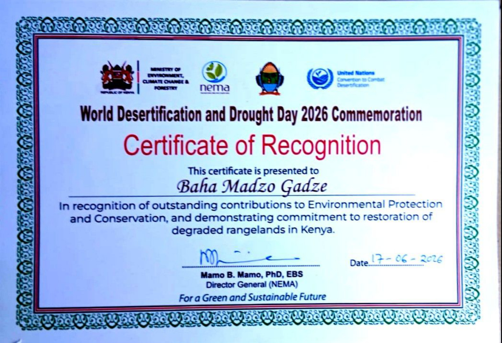

Recognition & Awards
Celebrating milestones, certificates, awards and recognitions received by BAHA MADZO GADZE FOR CHARITY and its leadership.
2026 Recognitions

17 June 2026 • Vipingo, Kilifi County
World Desertification and Drought Day 2026
Certificate of Recognition awarded to BAHA MADZO GADZE FOR CHARITY for outstanding contributions to environmental protection and restoration of degraded rangelands.
View Certificate